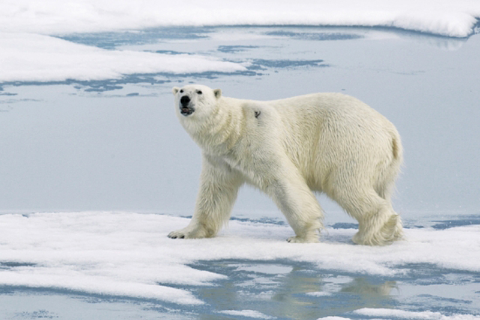

¿Qué es el Deshielo de los Polos?
El deshielo en el Ártico y en la Antártida, es ya un hecho probado que cuenta con el consenso de la comunidad científica internacional. El cambio climático, causado principalmente por las emisiones de gases de efecto invernadero a la atmósfera, ha afectado a muchos ecosistemas frágiles.
Hay evidencias de que la temperatura de los océanos ha aumentado, lo que podría haber sido el detonante original del adelgazamiento del casquete de hielo. La temperatura de la superficie de la Tierra también está cambiando y afectando al calentamiento. El año 2014 fue el más cálido registrado desde que hay mediciones, en 1880. ¿Cómo afecta todo esto a los Polos del planeta?
La mayor parte de este calentamiento se ha producido en los últimos 30 años, pero el aumento ha sido especialmente acentuado en los últimos diez, agravando la situación de deshielo en el Ártico y la Antártida.

El estado del Ártico
En el Ártico, desde 1979 hasta el final del verano de 2014 se ha reducido en un 40 % el área cubierta por el hielo marino. Este vídeo de la agencia del clima de EE.UU. recoge en un solo minuto y de forma impactante el deshielo que ha sufrido la zona desde el año 1987 hasta el 2014. Los hielos más viejos, hace apenas 26 años dominaban la región y ¡prácticamente han desaparecido en la actualidad!
La Antártida hoy
En la Antártida, los datos extraídos tampoco son muy alentadores. Recientemente, se ha conocido que su mayor glaciar, el Totten, con 130 km de largo y 30 de ancho, se está derritiendo debido al aumento de la temperatura del mar. Otro de sus grandes glaciares, el Smith, ha ido menguando a razón de 2 km por año, hasta perder 35 km de superficie.
La situación de deshielo que está sufriendo la Antártida, se ha catalogado ya como “irreversible”. Según la NASA, tras cuatro décadas de observación en la zona, la contracción que han sufrido sus glaciares es irreversible e imparable.
Serán además, la Antártida junto con Groenlandia, los que más impulsen el aumento del nivel del mar: "Si los gases de efecto invernadero siguen aumentando como antes, la descarga de hielo de la Antártida podría elevar el océano global por una cantidad adicional de entre 1 a 37 centímetros ya en este siglo", según Anders Levermann, del Instituto de Potsdam para la Investigación del Impacto Climático (PIK).